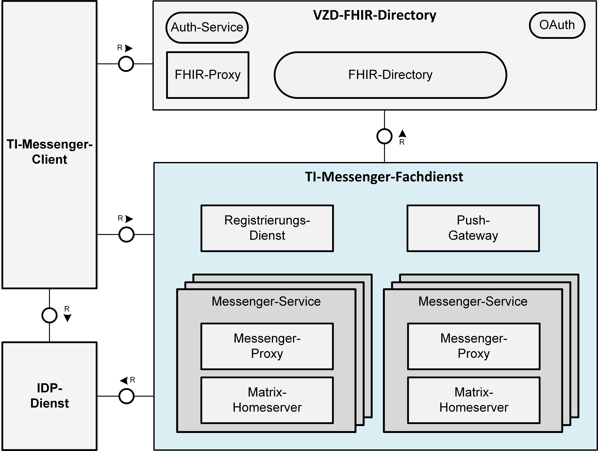
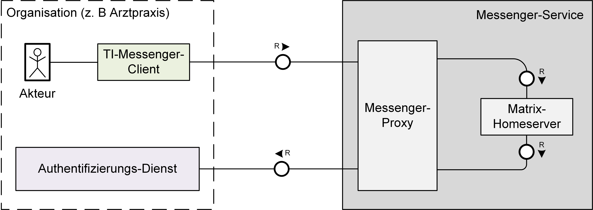
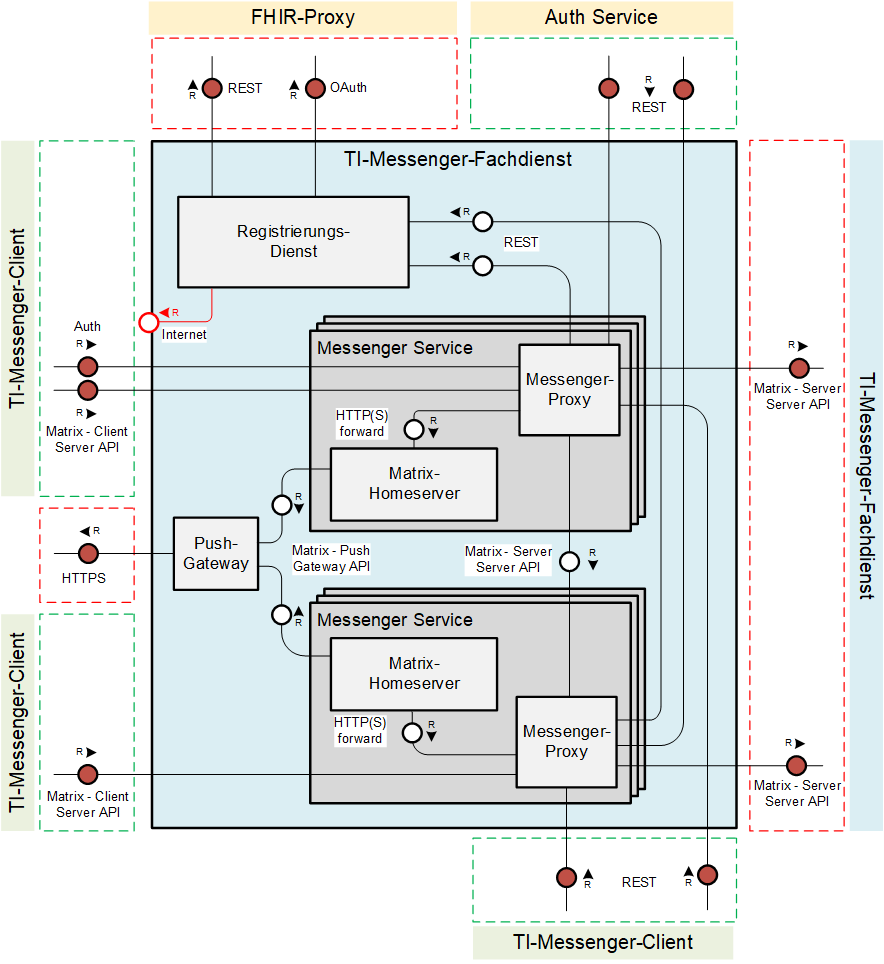
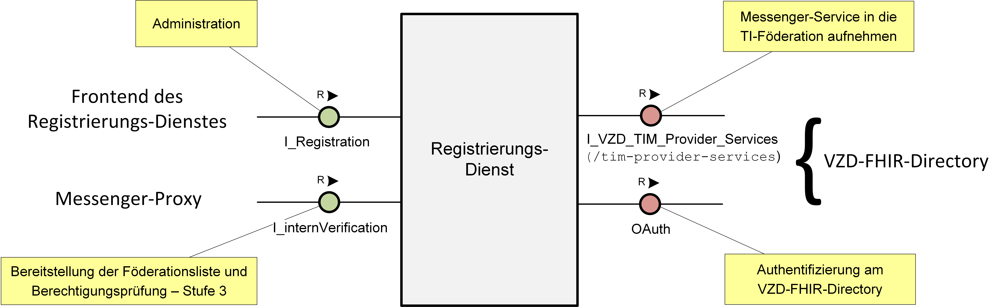
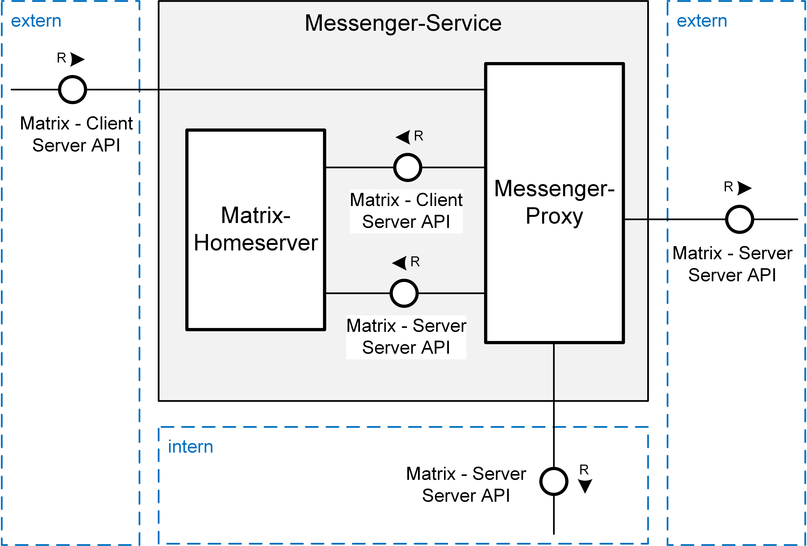

Elektronische Gesundheitskarte und Telematikinfrastruktur
Spezifikation
TI-Messenger-Fachdienst
| Version | 1.1.0 |
| Revision | 567567 |
| Stand | 29.07.2022 |
| Status | in Bearbeitung |
| Klassifizierung | öffentlich |
| Referenzierung | gemSpec_TI-Messenger-FD |
Änderungen zur Vorversion
Anpassungen des vorliegenden Dokumentes im Vergleich zur Vorversion können Sie der nachfolgenden Tabelle entnehmen.
Dokumentenhistorie
| Version | Stand | Kap./ Seite | Grund der Änderung, besondere Hinweise | Bearbeitung |
|---|---|---|---|---|
| 1.0.0 | 01.10.2021 | Erstversion des Dokumentes | gematik | |
| 1.1.0 | 29.07.2022 | Überarbeitung folgender Features: – Erreichbarkeit einzelner Organisationseinheiten mittels Funktionsaccounts – Öffnung des TI-Messengers für Drittsysteme durch clientseitige Schnittstellen zur Integration z.B. ins Praxisverwaltungssystem – schnelles Finden von Kontaktdaten durch Zugriff auf FHIR-basiertes Adressbuch |
gematik | |
| 16.08.22 | Möglichkeit einer Art Zugriffskontrolle für Org-Admin |
Beim vorliegenden Dokument handelt es sich um die Festlegungen zur ersten Ausbaustufe des TI-Messengers. Diese Ausbaustufe ist definiert durch die Ad-hoc-Kommunikation zwischen Organisationen des Gesundheitswesens. Dabei wird insbesondere die Ad-hoc-Kommunikation zwischen Leistungserbringern bzw. zwischen Leistungserbringerinstitutionen betrachtet. Festlegungen zur Nutzergruppe der Versicherten und Anforderungen an Krankenversicherungsorganisationen werden in der zweiten Ausbaustufe des TI-Messengers Berücksichtigung finden und daher im vorliegenden Dokument nicht weiter betrachtet.
Die vorliegende Spezifikation definiert die Anforderungen zu Herstellung, Test und Betrieb des Produkttyps TI-Messenger-Fachdienst. Der Fachdienst ermöglicht die sichere Ad-hoc-Kommunikation zwischen Teilnehmern. Aus den Kommunikationsbeziehungen mit dem TI-Messenger-Client und dem VZD-FHIR-Directory resultieren vom TI-Messenger-Fachdienst anzubietende Schnittstellen, die in diesem Dokument normativ beschrieben werden. Vom TI-Messenger-Fachdienst genutzte Schnittstellen liegen zumeist in anderen Verantwortungsbereichen (z. B. IDP-Dienst). Diese werden in der entsprechenden Produkttypspezifikation definiert.
Das Dokument richtet sich zwecks der Realisierung an Hersteller des Produkttypen Fachdienst TI-Messenger sowie an Anbieter, welche diesen Produkttypen betreiben [gemKPT_Betr]. Alle Hersteller und Anbieter von TI-Anwendungen, die Schnittstellen der Komponente nutzen, oder Daten mit dem Produkttypen Fachdienst TI-Messenger austauschen oder solche Daten verarbeiten, müssen dieses Dokument ebenso berücksichtigen.
Dieses Dokument enthält normative Festlegungen zur Telematikinfrastruktur des deutschen Gesundheitswesens. Der Gültigkeitszeitraum der vorliegenden Version und deren Anwendung in Zulassungs- oder Abnahmeverfahren wird durch die gematik GmbH in gesonderten Dokumenten (z. B. gemPTV_ATV_Festlegungen, Produkttypsteckbrief, Anbietertypsteckbrief, u.a.) oder Webplattformen (z. B. gitHub, u.a.) festgelegt und bekanntgegeben.
Schutzrechts-/Patentrechtshinweis
Die nachfolgende Spezifikation ist von der gematik allein unter technischen Gesichtspunkten erstellt worden. Im Einzelfall kann nicht ausgeschlossen werden, dass die Implementierung der Spezifikation in technische Schutzrechte Dritter eingreift. Es ist allein Sache des Anbieters oder Herstellers, durch geeignete Maßnahmen dafür Sorge zu tragen, dass von ihm aufgrund der Spezifikation angebotene Produkte und/oder Leistungen nicht gegen Schutzrechte Dritter verstoßen und sich ggf. die erforderlichen Erlaubnisse/Lizenzen von den betroffenen Schutzrechtsinhabern einzuholen. Die gematik GmbH übernimmt insofern keinerlei Gewährleistungen.
Spezifiziert werden in dem Dokument die von dem Produkttyp bereitgestellten (angebotenen) Schnittstellen. Benutzte Schnittstellen werden hingegen in der Spezifikation desjenigen Produkttypen beschrieben, der diese Schnittstelle bereitstellt. Auf die entsprechenden Dokumente wird referenziert (siehe auch Anhang, Kapitel ).
Die vollständige Anforderungslage für den Produkttyp ergibt sich aus weiteren Konzept- und Spezifikationsdokumenten, diese sind in dem Produkttypsteckbrief des Produkttyps TI-Messenger verzeichnet.
Die Spezifikation ist im Stil einer RFC-Spezifikation verfasst. Dies bedeutet:
Anwendungsfälle und Akzeptanzkriterien als Ausdruck normativer Festlegungen werden als Grundlage für Erlangung der Zulassung durch Tests geprüft und nachgewiesen. Sie besitzen eine eindeutige, permanente ID, welche als Referenz verwendet werden SOLL. Die Tests werden gegen eine von der gematik gestellte Referenz-Implementierung durchgeführt.
Anwendungsfälle und Akzeptanzkriterien werden im Dokument wie folgt dargestellt:
<ID> - <Titel des Anwendungsfalles / Akzeptanzkriteriums>
Text / Beschreibung
[<=]
Die einzelnen Elemente beschreiben:
Dabei umfasst der Anwendungsfall bzw. das Akzeptanzkriterium sämtliche zwischen ID und Textmarke [<=] angeführten Inhalte.
Der für die Erlangung einer Zulassung notwendige Nachweis der Erfüllung des Anwendungsfalls wird in den jeweiligen Steckbriefen festgelegt, in denen jeweils der Anwendungsfall gelistet ist. Akzeptanzkriterien werden in der Regel nicht im Steckbrief gelistet.
Hinweis auf offene Punkte
| Offener Punkt: Das Kapitel wird in einer späteren Version des Dokumentes ergänzt. |
Der TI-Messenger-Fachdienst ermöglicht eine sichere Kommunikation zwischen verschiedenen Akteuren im deutschen Gesundheitswesen. Dieser basiert auf dem offenen und dezentralen Kommunikationsprotokoll Matrix. Dabei stellt der Matrix Standard RESTful-APIs für die sichere Übertragung von JSON-Objekten zwischen Matrix-Clients und weiteren Diensten bereit. Die sichere Kommunikation zwischen den einzelnen Akteuren findet in verschlüsselter Form in Räumen auf den beteiligten Matrix-Homeservern statt.
Der TI-Messenger-Fachdienst besteht aus dezentralen und zentralen Teilkomponenten, welche bei der Produktzulassung getestet werden und die ein TI-Messenger-Anbieter bereitstellen MUSS. Bei den dezentralen Teilkomponenten handelt es sich um die Messenger-Services. Ein Messenger-Service besteht aus einem Matrix-Homeserver und einem Messenger-Proxy, der dafür sorgt, dass eine Föderation der Matrix-Homeserver nur zwischen verifizierten Domains stattfindet. Messenger-Services werden für einzelne Organisationen (z. B. Leistungserbringerinstitutionen, Verbände) bereitgestellt und erlauben die Nutzung durch alle berechtigten Akteure einer Organisation. Weiterhin KÖNNEN Messenger-Services Authentifizierungsverfahren anbieten, die nicht einer Organisation zugeordnet sind. Diese unterscheiden sich technisch nicht von anderen Messenger-Services. Einzig die zugeordnete Organisation bietet ein für diese Akteure notwendiges Authentifizierungsverfahren an.
Die Kommunikation zwischen einem TI-Messenger-Client und einem TI-Messenger-Fachdienst erfolgt immer über den Messenger-Proxy der Messenger-Services. Am Messenger-Proxy eines Messenger-Service findet zunächst die TLS-Terminierung der Verbindungen von den TI-Messenger-Clients statt. Der Messenger-Proxy kontrolliert die Zugehörigkeit zur TI-Föderation durch den Abgleich mit einer durch seinen Registrierungs-Dienst bereitgestellten Föderationsliste. Hierbei prüft der Messenger-Proxy, ob die beteiligten Matrix-Homeserver registrierte Mitglieder der Föderation sind und ein Akteur berechtigt ist, Anfragen auf dem Matrix-Homeserver auszulösen. Ebenfalls stellt der Messenger-Proxy eine Freigabeliste für die Berechtigungsprüfung (Stufe 2) bereit. Für die Administration dieser Freigabeliste durch die Akteure bietet der Messenger-Proxy den TI-Messenger-Clients eine Schnittstelle an.
Neben den dezentralen Messenger-Services besteht ein TI-Messenger-Fachdienst aus den zentralen Teilkomponenten Registrierungs-Dienst und Push-Gateway. Über den Registrierungs-Dienst bekommt der TI-Messenger-Anbieter die Möglichkeit Messenger-Services automatisiert Organisationen zur Verfügung zu stellen und die Matrix-Domain der von ihm bereitgestellten Messenger-Services in deren Organisationsressource in das zentrale VZD-FHIR-Directory einzutragen. Der Registrierungs-Dienst eines TI-Messenger-Fachdienstes bietet als weitere Funktion die Bereitstellung einer Föderationsliste für die Messenger Proxies seiner Messenger-Services an. Das Push-Gateway dient zur Übertragung von Benachrichtigungen (Notifications) an die jeweiligen TI-Messenger-Clients um den Eingang einer neuen Nachricht zu signalisieren.
In der folgenden Abbildung sind alle beteiligten Komponenten der TI-Messenger-Architektur in vereinfachter Form dargestellt. Der in der Abbildung blau dargestellte TI-Messenger-Fachdienst zeigt alle Komponenten die in dieser Spezifikation beschrieben werden.

Abbildung 1: Systemüberblick (Vereinfachte Darstellung)
Der folgende Abschnitt setzt den TI-Messenger-Fachdienst in den Systemkontext des TI-Messenger-Dienstes.
Für den Betrieb des TI-Messenger-Fachdienstes werden weitere Systeme benötigt. Dazu gehören zuständige IDP-Dienste welche Authentifizierungen und Autorisierungen auf Basis von SmartCard-Identitäten durchführen, sowie das VZD-FHIR-Directory. Die in Kapitel 2 zu findende Abbildung "Systemüberblick" zeigt deren Beziehung zum TI-Messenger-Fachdienst.
Ein IDP-Dienst stellt allen berechtigten Akteuren ID_TOKEN, gemäß des durch die OpenID Foundation [OpenID] spezifizierten Protokolls, zur Verfügung. Diese werden vom Auth-Service des VZD-FHIR-Directory verwendet, um ein search-accesstoken oder ein owner-accesstoken für den Lese- bzw. Schreibzugriff auf das FHIR-Directory zu erhalten.
Das zentrale VZD-FHIR-Directory bildet ein Verzeichnis aller TI-Messenger-Fachdienste, Organisationen und Leistungserbringer und bietet die Möglichkeit der Suche von Teilnehmern anhand konfigurierter Merkmale. Der Registrierungs-Dienst des TI-Messenger-Fachdienstes trägt bei erfolgreicher Verifizierung einer Organisation die Matrix-Domain des zugehörigen Messenger-Service der Organisation im VZD-FHIR-Directory ein. Durch diesen Eintrag kann der Messenger-Service an der Föderation des TI-Messenger-Dienstes teilnehmen. Das VZD-FHIR-Directory vertraut den Matrix-Homerservern der jeweiligen Messenger-Services, wenn die Domain des Messenger-Service erfolgreich in das VZD-FHIR-Directory eingetragen wurde.
Durch TI-Messenger-Anbieter werden Messenger-Services für Organisationen des Gesundheitswesens (z. B. Arztpraxis, Krankenhaus, Apotheke, Verband, etc.) bereitgestellt. Die Bereitstellung der Messenger-Services erfolgt über den Registrierungs-Dienst eines TI-Messenger-Fachdienstes und KANN on-premise oder zentral innerhalb von Rechenzentren stattfinden. Jeder Messenger-Service MUSS einer Organisation logisch zugeordnet sein. Die Messenger-Services KÖNNEN sich lediglich durch die je Organisation verwendeten Authentifizierungsverfahren unterscheiden. Diese werden durch die jeweilige Organisation festgelegt und bereitgestellt und ermöglichen damit die Nachnutzung bereits innerhalb der Organisation existierender Authentifizierungsverfahren. Die jeweilige Organisation MUSS die Kontrolle über die Benutzerverwaltung haben, um zu jedem Zeitpunkt Nutzer aus dem TI-Messenger ausschließen zu können. Dabei MÜSSEN Akteure vom Messenger-Service gelöscht/gesperrt werden, wenn der Nutzer innerhalb der Nutzerverwaltung gelöscht/gesperrt wurde.
Authentifizierungsverfahren
Messenger-Services MÜSSEN je nach Art der Organisation den Akteuren ein Authentifizierungsverfahren anbieten. Sind zum Beispiel bereits Systeme wie Active-Directory oder LDAP basierende Nutzerverzeichnisse innerhalb einer Organisation verfügbar, KÖNNEN diese verwendet werden, indem der jeweilige Matrix-Homeserver bei diesen registriert wird. Sind keine Authentifizierungsverfahren in der Organisation vorhanden KÖNNEN TI-Messenger-Anbieter entsprechende Authentifizierungsverfahren zur Verfügung stellen. Diese erlauben eine Authentifizierung von Akteure (z. B. durch Benutzername/Passwort und einen zweiten Faktor) und können auch von weiteren Systemen nachgenutzt werden.
Die nachfolgende Abbildung verdeutlicht die Nachnutzung eines existierenden Authentifizierungsverfahrens von Akteuren innerhalb einer Organisation durch einen Messenger-Service.

Abbildung 2: Beispiel - Authentifizierung von Akteuren einer Organisation
Zur Sicherstellung des Datenschutzes und der Sicherheit im Rahmen des TI-Messenger-Dienstes werden im Folgenden zu beachtende Anforderungen an den TI-Messenger-Fachdienst beschrieben. Anforderungen, die durch andere Systemkomponenten sichergestellt werden, sind hier nicht weiter aufgeführt.
A_22807
Der TI-Messenger-Anbieter MUSS Kunden vertraglich verpflichten, dass organisationsbasierte TI-Messenger-Accounts nicht an Dritte vergeben werden und nur Accounts für Akteure der Organisation erstellt werden, mit denen ein Beschäftigungsverhältnis oder Dienstleistervertragsverhältnis besteht. Funktionsaccounts (in Verbindung mit einem Chatbot) sind von den Vertragsverpflichtungen ausgenommen.
<=
A_22809
TI-Messenger-Fachdienst-Hersteller MÜSSEN sicherstellen, dass sämtliche Verbindungen zwischen Komponenten des TI-Messenger-Fachdienstes mittels TLS kommunizieren, sofern diese Kommunikation die Grenzen einer virtuellen/physischen Maschine überschreitet. Hierzu MUSS mindestens serverseitiges TLS verwendet werden. Sofern kein beidseitiges TLS verwendet wird, MUSS die Authentizität der Clientseite mit gleichwertiger Sicherheit sichergestellt werden. Es gelten die Festlegungen gemäß [gemSpec_Krypt].
<=
A_22929
TI-Messenger-Anbieter MÜSSEN sicherstellen, dass sämtliche Verbindungen zwischen Komponenten des TI-Messenger-Fachdienstes mittels TLS kommunizieren, sofern diese Kommunikation die Grenzen einer virtuellen/physischen Maschine überschreitet. Hierzu MUSS mindestens serverseitiges TLS verwendet werden. Es gelten die Festlegungen gemäß [gemSpec_Krypt].
<=
A_22936
TI-Messenger-Anbieter KÖNNEN für die Authentisierung von Akteuren in der Rolle "User" bestehende Authentifizierungsverfahren der Organisation nachnutzen. Sollte dies der Fall sein, MÜSSEN Anbieter die Organisation und die Administratoren explizit darauf hinweisen, dass die Sicherheit der Nutzerauthentisierung damit in die Verantwortung der Organisation gegeben wird. Hierzu MUSS der Anbieter sicherstellen, dass er nur Authentifizierungsverfahren akzeptiert, die in der Hand der Organisation sind und deren Authentisierungsmittel von dieser verwaltet und gesperrt werden können. Der Anbieter MUSS sicherstellen, dass zur Authentifizierung mindestens zwei Faktoren verwendet werden und die Sicherheitsempfehlungen des BSI [BSI 2-Faktor] Berücksichtigung finden. Zur Vermeidung von Angriffen aus der Ferne auf den 2. Faktor ist ein Verfahren zu wählen, das mindestens mit "mittel" bewertet ist. Der Anbieter MUSS sicherstellen, dass mindestens eine Authentisierung mittels OIDC-Authenticator unterstützt wird und technische Optionen für die Organisation gegeben sind, damit beide Faktoren nicht durch einen Angriffsvektor kompromittiert werden können.
<=
Hinweis: A_22936 regelt lediglich die Authentisierung, die notwendig ist um ein Token zu erhalten, mit dem sich Nutzer gegen den Messenger-Service authentisieren können.
A_22815
TI-Messenger-Anbieter MÜSSEN sicherstellen, dass kryptographisches Material zur Authentisierung gegen das VZD-FHIR-Directory sicher eingebracht wird. Zum Nachweis der Umsetzung ist eine Prüfung des Prozesses zur Einbringung des kryptografischen Materials erforderlich. Die Prüfung umfasst die Beschreibung und Durchführung des Prozesses. Eine Auditierung der Umsetzung ist optional.
<=
A_22817
TI-Messenger-Fachdienst-Hersteller DÜRFEN NICHT Daten zu Profilingzwecken sammeln. Dies betrifft insbesondere eine Überwachung welche Akteure mit welchen anderen Akteuren kommunizieren.
Hinweis: Die gematik kann nach § 331 Abs. 2 SGB V Daten festlegen, die Hersteller von Komponenten und Dienste der gematik offenzulegen bzw. zu übermitteln haben, sofern diese erforderlich sind, um den gesetzlichen Auftrag der gematik zur Überwachung des Betriebs zur Gewährleistung der Sicherheit, Verfügbarkeit und Nutzbarkeit der Telematikinfrastruktur zu erfüllen. Nur die hierfür erforderlichen personenbezogenen Daten dürfen von den Anbietern und Herstellern als zeitlich begrenzte Ausnahme vom Profilingverbot erhoben und ausschließlich für den genannten Zweck verwendet werden.
<=
A_22814
TI-Messenger-Anbieter DÜRFEN NICHT Daten zu Profilingzwecken sammeln. Dies betrifft insbesondere eine Überwachung welche Akteure mit welchen anderen Akteuren kommunizieren.
Hinweis: Die gematik kann nach § 331 Abs. 2 SGB V Daten festlegen, die Anbieter von Komponenten und Dienste der gematik offenzulegen bzw. zu übermitteln haben, sofern diese erforderlich sind, um den gesetzlichen Auftrag der gematik zur Überwachung des Betriebs zur Gewährleistung der Sicherheit, Verfügbarkeit und Nutzbarkeit der Telematikinfrastruktur zu erfüllen. Nur die hierfür erforderlichen personenbezogenen Daten dürfen von den Anbietern und Herstellern als zeitlich begrenzte Ausnahme vom Profilingverbot erhoben und ausschließlich für den genannten Zweck verwendet werden.
<=
A_22813
Falls im TI-Messenger-Fachdienst eine Protokollierung zum Zwecke der Fehler- bzw. Störungsbehebung erfolgt, MUSS der Fachdienst unter Berücksichtigung des Art. 25 Abs. 2 DSGVO sicherstellen, dass in den Protokolldaten entsprechend dem Datenschutzgrundsatz nach Art. 5 DSGVO nur personenbezogene Daten in der Art und dem Umfang enthalten sind, wie sie zur Behebung erforderlich sind und dass die erzeugten Protokolldaten im Fachdienst nach der Behebung unverzüglich gelöscht werden. Sofern andere gesetzliche Grundlagen wie §331 SGB V nicht überwiegen sind hierzu nur anonymisierte Daten zu protokollieren.
<=
A_22811
TI-Messenger-Fachdienst-Hersteller MÜSSEN sicherstellen, dass ihre Matrix-Homeserver eine Funktion anbieten, durch die Events, Gesprächsinhalte und mit einzelnen Gesprächen assoziierte Daten (z. B. versandte Dateien) nach einem Zeitraum von 6 Monaten seit letzter Aktivität in einem Raum gelöscht werden. Hersteller MÜSSEN sicherstellen, dass der Zeitraum durch den Akteur in der Rolle "Org-Admin" konfigurierbar ist. Diese Funktion DARF über Opt-Out durch den Akteur in der Rolle "Org-Admin" deaktivierbar sein. Diese Funktion DARF darüber realisierbar sein, dass nach Verstreichen der Frist Teilnehmer einen Gesprächsraum verlassen und der Raum nach Verlassen aller Teilnehmer automatisch gelöscht wird.
<=
A_22808
TI-Messenger-Services MÜSSEN sicherstellen, dass die Push-Gateways externe Push-Dienste datenschutzkonform nutzen. Hierzu werden folgende Kriterien definiert, die in jedem Fall beachtet werden MÜSSEN:
A_22965
TI-Messenger-Anbieter MÜSSEN sicherstellen, dass die Push-Gateways externe Push-Dienste datenschutzkonform nutzen. Hierzu werden folgende Kriterien definiert, die in jedem Fall beachtet werden MÜSSEN:
A_22818
TI-Messenger-Fachdienst-Hersteller MÜSSEN Maßnahmen umsetzen, um die Auswirkung von unentdeckten Schwachstellen in benutzten Software-Bibliotheken zu minimieren.
<=
Hinweis zu A_22818: Beispielmaßnahmen sind in [OWASP Proactive Control#C2] zu finden. Das gewählte Verfahren MUSS die gleiche Wirksamkeit aufweisen, wie die Kapselung gemäß [OWASP Proactive Control#C2 Punkt 4].
A_22819
Falls der TI-Messenger-Fachdienst-Hersteller entscheidet, eine CC-Zertifizierung statt eines Produktgutachtens durchzuführen, MUSS der Hersteller bei der Einreichung eines CC-Zertifizierungsantrags sein Security-Target-Dokument der gematik zur Verfügung stellen. In diesem MÜSSEN mindestens beschrieben sein:
A_22810
TI-Messenger-Fachdienst-Hersteller MÜSSEN sämtliche, nicht in der TI-Messenger-Spezifikation beschriebenen, Abweichungen vom Matrix-Protokoll oder den MUST- oder SHOULD-Empfehlungen des Matrix-Protokolls dokumentieren und begründen.
<=
Hinweis: Gemeint sind hier nur tatsächliche Abweichungen von Setzungen der Matrix-Spezifikation und nicht zusätzliche Funktionen, die auf dem TI-Messenger-Dienst aufbauen und produktspezifisch sind.
A_22812
TI-Messenger-Fachdienst-Hersteller MÜSSEN sicherstellen, dass alle implementierten Funktionen, die über den gewöhnlichen Funktionsumfang einer TI-Messenger-Komponente hinausgehen die Sicherheit des Produkts nicht gefährden und die Interoperabilität mit anderen TI-Messenger-Produkten gewährleisten.
<=
A_22928
TI-Messenger-Anbieter MÜSSEN als Administratoren Personal einsetzen, welches für die damit verbundenen Aufgaben und Themen der Informationssicherheit geschult und sensibilisiert wurden. Anbieter MÜSSEN technisch sicherstellen, dass nur die berechtigten Administratoren administrativen Zugriff auf die zu verwaltenden Messenger-Services haben.
<=
A_22816
TI-Messenger-Hersteller MÜSSEN sicherstellen, dass die Funktionen Cross-Signing und Secure Secret Storage and Sharing (SSSS) zur Device Verification vom Fachdienst unterstützt werden. Es MUSS die Spezifikation hinsichtlich Ende-zu-Ende Verschlüsselung vollständig befolgt werden.
<=
Ein Akteur in der Rolle "Org-Admin" MUSS sich über das vom TI-Messenger-Anbieter bereitgestellte Frontend eines Registrierungs-Dienstes mit der Identität (SMC-B) der Organisation gegenüber dem Registrierungs-Dienst authentisieren, um einen oder mehrere Messenger-Services für seine Organisation registrieren zu können.
Damit Akteure Ad-Hoc-Nachrichten austauschen können, MÜSSEN sich diese an ihrem Messenger-Service authentisieren. Die Authentisierung MUSS hierbei über ein zwischen der Organisation und dem Anbieter vereinbartes Authentifizierungsverfahren erfolgen. Wurden die Akteure erfolgreich an ihrem Messenger-Service authentifiziert, erhalten sie ein von ihrem Homeserver ausgestelltes Matrix-ACCESS_TOKEN, welches für die spätere Authentifizierung des TI-Messenger-Clients verwendet wird.
IDP-Dienst
Der zentrale IDP-Dienst der gematik wird benötigt, um eine Organisation am Registrierungs-Dienst zu authentifizieren und den TI-Messenger-Clients Schreibzugriff auf das VZD-FHIR-Directory zu ermöglichen. Hierfür MÜSSEN der Registrierungs-Dienst und die TI-Messenger-Clients am zugelassenen IDP-Dienst der gematik gemäß [gemSpec_IDP_FD] registriert sein. Diese MÜSSEN den ausgestellten Security Tokens (ID_TOKEN) dieses IDP-Dienstes vertrauen.
Im Rahmen der Registrierung des VZD-FHIR-Directory am IDP-Dienst werden notwendige Claims für das ID_TOKEN (bestätigte Identifikationsmerkmale für den Akteur) festgelegt. Der Anbieter des TI-Messengers MUSS über einen organisatorischen Prozess beim zugelassenen IDP-Dienst folgende Claims im ID_TOKEN vereinbaren:
Tabelle 1: Inhalte der Claims für SMC-B/HBA
| Leistungserbringerinstitutionen (SMC-B) | Leistungserbringer (HBA) |
|---|---|
|
|
Die ProfessionOID gibt an um welche Art von Leistungserbringer (z. B. Arzt, Zahnarzt etc.) es sich handelt. Die idNummer beinhaltet die Telematik-ID für Organisationen des Gesundheitswesens und Leistungserbringer.
Verwaltung der Nutzersession
Die Verwaltung der Nutzersession MUSS wie in der Matrix-Spezifikation beschrieben erfolgen.
2-Faktor-Atuthentifizierung
Der TI-Messenger-Service MUSS zur Authentisierung der Akteure mindestens eine 2-Faktor-Authentifizierung durchsetzen. Der zweite Faktor MUSS den Sicherheitsempfehlungen des BSI gemäß [BSI 2-Faktor] zur Resilienz gegen Angriffe aus der Ferne, mindestens mit mittlerer Bewertung genügen. Der Anbieter MUSS sicherstellen, dass mindestens eine Authentisierung mittels OIDC-Authenticator unterstützt wird und technische Optionen für die Organisation gegeben sind, damit beide Faktoren nicht durch einen Angriffsvektor kompromittiert werden können.
Für die Namensauflösung der vom TI-Messenger-Fachdienst angebotenen Außenschnittstellen, werden DNS-Server im Internet verwendet. Der vereinbarte Abfrage-Record MUSS durch den jeweiligen TI-Messenger-Anbieter bereitgestellt werden und MUSS in öffentlichen DNS-Servern eingetragen sein.
Wird bei der Nutzung eines Messenger-Service für eine Organisation eine auf die Domain der Organisation bezogene Benamung gewählt, erfolgt die Eintragung der notwendigen DNS-Records auf DNS-Server im Internet durch die Administration der Organisation.
Identifizierung von Messenger-Services
Jeder Messenger-Service MUSS durch einen Matrix-Homeservernamen identifiziert werden, der aus einem Hostnamen und einem optionalen Port besteht. Weitere Informationen finden sich in [Server-Server API#Server discovery].
Produkttests zur Sicherstellung der Konformität mit der Spezifikation sind vollständig in der Verantwortung der Anbieter/Hersteller des TI-Messenger-Clients. Die gematik konzentriert sich bei der Zulassung auf das Zusammenspiel der Produkte durch E2E- und IOP Tests.
Die eigenverantwortlichen Produkttests bei den Industriepartnern umfassen:
Die Hersteller der TI-Messenger-Fachdienste MÜSSEN zusichern, dass die gematik die Produkttests der Industriepartner in Form von Reviews der Testkonzepte, der Testspezifikationen, der Testfälle und mit dem Review der Testprotokolle (Log- und Trace-Daten) überprüfen kann.
Die gematik fördert eine enge Zusammenarbeit und unterstützt Industriepartner dabei, die Qualität der Produkte zu verbessern. Dies erfolgt durch die Organisation zeitnaher IOP-Tests, die Synchronisierung von Meilensteinen und regelmäßige industriepartnerübergreifende Test-Sessions. Die Test-Sessions umfassen gegenseitige IOP- und E2E Tests.
Die gematik stellt eine TI-Messenger-Dienst Referenzimplementierung zur Verfügung. Zur Sicherstellung der Interoperabilität zwischen verschiedenen TI-Messenger-Fachdiensten innerhalb des TI-Messenger-Dienstes MUSS der TI-Messenger-Fachdienst eines TI-Messenger-Anbieters gegen die Referenzimplementierung (TI-Messenger-Client und TI-Messenger-Fachdienst) getestet werden.
ML-124200
Der Hersteller des TI-Messenger-Fachdienstes MUSS den Fachdienst gegen die Referenzimplementierung erfolgreich testen. Die Testergebnisse sind der gematik vorzulegen.
<=
Für die Anbieter Zulassung MÜSSEN die TI-Messenger-Fachdienste und TI-Messenger-Clients vom TI-Messenger-Anbieter bereitgestellt werden. Um einen automatisierten Test für den TI-Messenger-Dienst zu ermöglichen, MUSS die Test-App des TI-Messenger-Clients zusätzlich ein Testtreiber-Modul intern oder extern zur Verfügung stellen. Dieses MUSS die Funktionalitäten der produktspezifischen Schnittstelle des TI-Messenger-Clients über eine standardisierte Schnittstelle von außen zugänglich machen und einen Fernzugriff ermöglichen. Das Testtreiber-Modul darf die Ausgaben des TI-Messenger-Clients gemäß der technischen Schnittstelle aufarbeiten, aber darf die Inhalte nicht verfälschen. Eine genaue Beschreibung des Testvorgehens ist in der [gemSpec_TI_Messenger-Client] zu finden.
Die gematik testet im Rahmen der Zulassungsverfahren auf Basis von Anwendungsfällen. Dabei wird sich auf die Anwendungsfälle aus der [gemSpec_TI-Messenger-Dienst] bezogen. Hierbei wird versucht möglichst viele Funktionsbereiche der Komponenten des TI-Messenger-Dienstes einzubeziehen. Die Tests werden zunächst gegen die Referenzimplementierung der gematik durchgeführt. In diesem Schritt wird die Funktionalität des Zulassungsobjektes TI-Messenger-Dienste geprüft. Anschließend wird mit den IOP- und E2E Tests die Interoperabilität zwischen den verschiedenen Anbietern nachgewiesen. Hierfür werden dann alle bereits zur Verfügung stehenden TI-Messenger-Dienste (die Test-Instanzen der einzelnen Hersteller) zusammengeschlossen und anschließen gegeneinander getestet. Alle Anbieter MÜSSEN bereits im Vorfeld diese IOP- und E2E Tests selbständig und eigenverantwortlich durchführen. Bei Problemen im Rahmen der Zulassung MÜSSEN die Anbieter bei der Analyse unterstützen.
Der Betrieb des Fachdienstes wird durch den TI-Messenger-Anbieter verantwortet. Entsprechend dem Betriebskonzept [gemKPT_Betr#Anbieterkonstellationen], KANN der Betrieb auch an Unterauftragnehmer aus- bzw. verlagert werden oder on-premise gehostet werden. Die Koordination der jeweiligen Komponenten sowie die Erfüllung der Anforderungen verbleiben jedoch beim Anbieter. Dieser KANN in Abstimmung mit seinen Nutzern und Dienstleistern Verträge abschließen um den sicheren Betrieb aufrecht zu erhalten.
Anforderungen zu Performance und Reporting sind den entsprechenden Produkt- und Anbietertypsteckbriefen u.a. den Dokumenten [gemSpec_Perf] und [gemKPT_Betr] zu entnehmen.
Der TI-Messenger-Anbieter MUSS das Service Monitoring der gematik technisch-organisatorisch unterstützen.
Dafür kann es z.B. notwendig sein, dass entsprechende Accounts auf Homeservern eingerichtet werden. Das Service Monitoring SOLL dabei zu keinen technischen Veränderungen an den Produkten führen.
A_23092
Der TI-Messenger Fachdienst MUSS mindestens alle 24 Stunden, für alle bei ihm registrierten Organisationen mit einem Messenger-Service, prüfen, ob diese im VZD-FHIR-Directory als "active" (Organization.active) eingetragen sind.
<=
A_23093
Wenn die Organisation nicht mehr im VZD-FHIR-Directory "active" (Organization.active) ist, MUSS der TI-Messenger-Anbieter diese darüber informieren.
<=
A_23094
Wenn die Organisation länger als 30 Kalendertage nicht im VZD-FHIR-Directory "active" (Organization.active) ist, MUSS der TI-Messenger-Anbieter die Domäne dieses Messenger-Service aus der Föderation löschen (siehe FHIR-VZD: I_VZD_TIM_Provider_Services, DELETE /federation/{domain}). Dann DARF erst nach erneuter Authentifizierung mit der SMC-B der Dienst wieder genutzt werden, siehe AF_10103.
<=
Kontrollierte Außerbetriebnahme
Wenn z. B. das Vertragsverhältnis zwischen Kunde und TI-Messenger-Anbieter ausläuft, so MUSS der TI-Messenger-Anbieter die dazugehörige Domäne dieses Messenger-Service aus der Föderation löschen (siehe FHIR-VZD: I_VZD_TIM_Provider_Services, DELETE /federation/{domain}) und den Messenger-Service abschalten, so dass dieser nicht mehr erreicht werden kann.
Im folgenden Kapitel wird der TI-Messenger-Fachdienst bezogen auf seine Teilkomponenten funktional beschrieben. Der TI-Messenger-Fachdienst ist die Kernkomponente des TI-Messenger-Dienstes. Dieser stellt alle Schnittstellen bereit, die für die Kommunikation innerhalb des TI-Messenger-Dienstes benötigt werden.
In der folgenden Abbildung ist der TI-Messenger-Fachdienst als Whitebox dargestellt:

Abbildung 3: Funktionaler Aufbau des TI-Messenger-Fachdienstes
Die in der Abbildung grün dargestellten Boxen zeigen die Schnittstellen, die am TI-Messenger-Fachdienst aufgerufen werden. Rot dargestellte Boxen zeigen die Schnittstellen, über die der TI-Messenger-Fachdienst weitere Services anderer Komponenten nutzt. Eine Ausnahme bildet die Kommunikation zwischen den TI-Messenger-Fachdiensten. Hier wird die Kommunikation bilateral zwischen den zur TI-Föderation gehörenden Fachdiensten realisiert. Die in der Abbildung rot dargestellte Linie vom Registrierungs-Dienst zum Internet zeigt die vom Frontend des Registrierungs-Dienstes verwendete Schnittstelle. Diese wird nicht normativ von der gematik definiert. Die Ausgestaltung obliegt dem jeweiligen TI-Messenger-Anbieter.
Im folgenden Kapitel werden alle für den Betrieb des TI-Messenger-Fachdienstes notwendigen Komponenten funktional beschrieben.
Der Registrierungs-Dienst bietet zwei Schnittstellen an. In der folgenden Abbildung sind die von ihm bereitgestellten (grün) und genutzten (rot) Schnittstellen dargestellt:

Abbildung 4: Übersicht der Schnittstellen am Registrierungs-Dienst
Hinweis: Bei der in der Abbildung dargestellte Schnittstelle I_internVerification handelt es sich um eine abstrakte interne Schnittstelle am Registrierungs-Dienst mit der den Messenger-Proxies mehrere Funktionalitäten bereitgestellt werden. Die Umsetzung der bereitzustellenden Funktionalitäten (Bereitstellung der Föderationsliste und Berechtigungsprüfung - Stufe 3) am Registrierungs-Dienst kann auch über separate Schnittstellen erfolgen.
Administration
Der TI-Messenger-Fachdienst MUSS eine Schnittstelle für die Administration am Registrierungs-Dienstes bereitstellen. Dies ist notwendig, damit ein Onboarding-Prozess für die Registrierung von Messenger-Services gewährleistet wird. Der Registrierungs-Dienst MUSS es ermöglichen einen neuen Messenger-Service über ein Frontend des Registrierungs-Dienstes zu erzeugen. Die Ausgestaltung des Frontends sowie der Schnittstelle am Registrierungs-Dienst (I_Registration) ist dem jeweiligen TI-Messenger-Anbieter überlassen. Der Registrierungs-Dienst MUSS bei einer neuen Registrierungsanfrage automatisiert den durch den zuständigen IDP-Dienst ausgestellten ID_TOKEN (gemäß Kapitel "Authentifizierung") validieren. Bei der Validierung MUSS der Registrierungs-Dienst die im ID_TOKEN enthaltene ProfessionOID gegen die in der Tabelle "Tab_PKI_403-03 OID-Festlegung Institutionen im X.509-Zertifikat der SMC-B" gelisteten OIDs gemäß [gemSpec_OID] prüfen. Nach erfolgreicher Authentifizierung einer Organisation am Registrierungs-Dienst MUSS ein Admin-Account für die Organisation auf dem Registrierungs-Dienst angelegt werden. Dieser MUSS für die Authentisierung des Akteurs in der Rolle "Org-Admin" eine 2-Faktor-Authentifizierung verwenden und die Sicherheitsempfehlungen des BSI [BSI 2-Faktor] berücksichtigen. Zur Vermeidung von Angriffen aus der Ferne auf den 2. Faktor ist ein Verfahren zu wählen, das mindestens mit "mittel" bewertet ist. Der Anbieter MUSS sicherstellen, dass mindestens eine Authentisierung mittels OIDC-Authenticator unterstützt wird und technische Optionen für die Organisation gegeben sind, damit beide Faktoren nicht durch einen Angriffsvektor kompromittiert werden können. Ist bereits für die Organisation ein Admin-Account vorhanden, DARF NICHT eine erneute initiale Authentisierung mit Hilfe der SMC-B für diese Organisation möglich sein.
Der Admin-Account ermöglicht es einem Akteurs in der Rolle "Org-Admin" einen oder mehrere Messenger-Services für seine Organisation zu registrieren. Die in der Registrierungsanfrage für eine Domain übergebene Matrix-Domain wird durch den Registrierungs-Dienst über die Schnittstelle I_VZD_TIM_Provider_Services am VZD FHIR-Proxy in die Föderation eingetragen. Ebenfalls MUSS der Registrierungs-Dienst dem Frontend des Registrierungs-Dienstes die erstelle Matrix-Domain für den Zugriff auf den beantragten Messenger-Service übergeben. Die Abstimmung bezüglich der zu verwendenden Authentifizierungsverfahren eines Messenger-Service MUSS durch den Anbieter des TI-Messengers unterstützt werden.
Authentifizierung am VZD-FHIR-Directory
Für den Zugriff des Registrierungs-Dienstes auf das VZD-FHIR-Directory über die Schnittstelle /tim-provider-services des FHIR-Proxy ist eine vorherige Authentifizierung mittels OAuth2 Client Credentials Flow notwendig. Die dafür notwendigen Client-Credentials MUSS der TI-Messenger-Anbieter für seinen Registrierungs-Dienst beim VZD-FHIR-Directory-Anbieter beantragen. Die Beantragung erfolgt über einen Service-Request im TI-ITSM-System. Nach erfolgreicher Authentifizierung erhält der Registrierungs-Dienst ein provider-accesstoken, welches beim Aufruf der /tim-provider-services Schnittstelle enthalten sein MUSS.
Messenger-Service in die TI-Föderation aufnehmen
Für die Aufnahme eines Messenger-Services eines TI-Messenger-Fachdienstes in die TI-Föderation des TI-Messenger-Dienstes, MUSS durch den Registrierungs-Dienst die vom Frontend des Registrierungs-Dienstes übergebene Matrix-Domain einer Organisation durch den Aufruf der Operation /tim-provider-services/addTiMessengerDomain, am VZD-FHIR-Directory, eintragen werden. Im Aufruf der Schnittstelle MUSS ein provider-accesstoken enthalten sein.
Bereitstellung der Föderationsliste
Der Registrierungs-Dienst MUSS eine Liste aller verifizierten Matrix-Domains des VZD-FHIR-Directory vorhalten und diese den Messenger-Proxies über eine interne Schnittstelle bereitstellen. Die Ausgestaltung der Schnittstelle am Registrierungs-Dienst (I_internVerification) ist dem jeweiligen TI-Messenger-Anbieter überlassen.
Inhalt der Föderationsliste die der Registrierungs-Dienst über die Schnittstelle den Messenger-Proxies bereitstellen MUSS, sind die Hashes aller an der Föderation beteiligten Matrix-Domainnamen. Der Registrierungs-Dienst MUSS die aktuelle TI-Föderationsliste am VZD-FHIR-Directory abfragen. Für den Abruf MUSS die am FHIR-Proxy des VZD-FHIR-Directory bereitgestellte Operation /tim-provider-services/getFederationList aufgerufen werden. Im Aufruf der Schnittstelle MUSS ein provider-accesstoken enthalten sein. Die Abfrage der Föderationsliste MUSS stündlich erfolgen. Die Prüfung auf Aktualität der Föderationsliste des Registrierungs-Dienstes MUSS zusätzlich bei jeder Anfrage durch einen Messenger-Proxy zur Bereitstellung der Föderationsliste über eine Abfrage beim FHIR-Proxy des VZD-FHIR-Directory erfolgen. Die Prüfung auf Aktualität erfolgt durch den Abgleich der Versionen der Föderationslisten. Nach dem Erhalt einer neuen Föderationsliste vom VZD-FHIR-Directory MUSS diese vom Registrierungs-Dienst den Messenger-Proxies für die Prüfung der Organisationszugehörigkeit über die interne Schnittstelle I_internVerification bereitgestellt werden.
Berechtigungsprüfung - Stufe 3
Der Registrierungs-Dienst MUSS eine Funktion anbieten, mit der die Überprüfung auf MXID-Einträge im VZD-FHIR-Directory möglich ist. Die Funktionalität MUSS über eine interne Schnittstelle (I_internVerification) den Messenger-Proxies bereitgestellt werden. Die Ausgestaltung der Schnittstelle am Registrierungs-Dienst ist dem jeweiligen TI-Messenger-Anbieter überlassen.
Über diese Schnittstelle MÜSSEN die MXID der beteiligten Akteure an die FHIR-Proxy Schnittstelle /tim-provider-services/whereIs des VZD-FHIR-Directory übergeben werden.
Die Prüfung ist erfolgreich wenn:
War die Prüfung erfolgreich, so MUSS der Registrierungs-Dienst dies an den Messenger-Proxy übergeben.
Ein Messenger-Service besteht aus den Teilkomponenten Matrix-Homeserver und dem Messenger-Proxy. Die Teilkomponente Matrix-Homeserver basiert auf dem offenen Kommunikationsprotokoll Matrix. Der Messenger-Proxy dient als Prüfinstanz und leitet Anfragen an den Matrix-Homeserver weiter. Welche APIs der Matrix-Spezifikation im Messenger-Service nachgenutzt werden, ist in der folgenden Abbildung dargestellt:

Abbildung 5: Matrix-API des Messenger-Service
Die Abbildung "Matrix-API des Messenger Service" zeigt die jeweils zu berücksichtigenden Matrix-APIs (Server-Server API und Client-Server API). Diese MÜSSEN gemäß
umgesetzt werden.
Der Aufruf der Client-Server-API am Matrix-Homeserver MUSS immer über den Messenger-Proxy erfolgen. Dieser leitet alle durch ihn autorisierten Aufrufe der TI-Messenger-Clients an den Matrix-Homeserver per HTTP(S)-Forward weiter. Die Kommunikation der Matrix-Homeserver MUSS ebenfalls über den Messenger-Proxy erfolgen. Auch hier MÜSSEN die Anfragen per HTTP(S)-Forward für die Matrix-Server-Server-Kommunikation zum Matrix-Homeserver weitergeleitet werden. Zum Versenden von Push-Notifications MUSS der Matrix-Homeserver das Matrix-Push-Gateway-API des Push-Gateways verwenden.
Der Messenger-Proxy agiert neben der Funktion als Proxy zur Weiterleitung aller Server-Server-API- und Client-Server-API-Aufrufe an den Matrix-Homeserver als Kontrollinstanz zur Prüfung der für die Kommunikation notwendigen Rechte. Hierfür MUSS der Messenger-Proxy für alle Server-Server- und Client-Server-API-Endpunkte genutzt werden.
Messenger-Services KÖNNEN dezentral oder on-premise von einem TI-Messenger-Anbieter bereitgestellt werden. Werden durch einen TI-Messenger-Anbieter mehrere Matrix-Domains in einem gemeinsamen Messenger-Service betrieben so MUSS die logische Trennung der Matrix-Domains sichergestellt werden.
Der Messenger-Proxy MUSS für jeden Messenger-Service bereitgestellt werden. Werden durch einen TI-Messenger-Anbieter mehrere Matrix-Domains in einem gemeinsamen Messenger-Service betrieben so MUSS die logische Trennung der Matrix-Domains sichergestellt werden. Die Matrix-Server-Server-API (Server-Server Proxy) und Matrix-Client-Server-API (Client-Server Proxy) bezogenen Prüfungen KÖNNEN logisch im Messenger-Proxy umgesetzt werden. Die Art der Umsetzung bleibt dem TI-Messenger-Fachdienst-Hersteller überlassen. Im Folgenden wird der Funktionsumfang des Messenger-Proxies weiter beschrieben.
TLS-Terminierung
Alle Anfragen der TI-Messenger-Clients und anderer Messenger-Services an den Matrix-Homeserver MÜSSEN über den Messenger-Proxy geleitet werden. Die TLS-Kommunikation zwischen den TI-Messenger-Clients und dem Matrix-Homeserver MUSS am Messenger-Proxy terminiert werden. Die Absicherung der TLS-Kommunikation MUSS durch eine einseitige Serverauthentisierung unter Nutzung eines X.509-Zertifikats erfolgen.
Prüfung des verwendeten Clients
Der Messenger-Proxy MUSS prüfen, ob die Anfrage von einen zugelassen TI-Messenger-Client erfolgt. Die Überprüfung erfolgt anhand des übergebenen Parameters client_id des TI-Messenger-Clients. Für die Prüfung der client_id MUSS diese zuvor vom TI-Messenger-Client-Hersteller an den TI-Messenger-Anbieter übermittelt werden.
HTTP(S)-Forwarding
Die Kommunikation zwischen TI-Messenger-Client und Matrix-Homeserver erfolgt immer über den Messenger-Proxy (Forwarding). Das Forwarding KANN sowohl über HTTP als auch über HTTPS erfolgen. Der Messenger-Proxy MUSS sowohl als Reverse-Proxy als auch als Forward-Proxy fungieren. Eine Kommunikation vom Matrix-Homeserver zum TI-Messenger-Client und auch zu einem anderen Matrix-Homeserver eines anderen Messenger-Service MUSS über den Messenger-Proxy geführt werden.
Schnittstelle für Authentifizierungsverfahren
Für die Nutzung eines eigenen Authentifizierungs-Dienstes durch eine Organisation MUSS der Messenger-Proxy eine Schnittstelle für die Anbindung des Authentifizierungs-Dienstes der Organisation bereitstellen. Die Umsetzung dieser Schnittstelle MUSS durch die Organisation und dem jeweiligen TI-Messenger-Anbieter abgestimmt werden.
Föderationsliste
Der Messenger-Proxy MUSS bei seinem zuständigen Registrierungs-Dienst die Föderationsliste über die interne Schnittstelle (I_internVerification) abrufen, die Signatur der Föderationsliste gemäß RFC7515 prüfen und diese lokal speichern. Zur Prüfung der Signatur der Föderationsliste ist das X.509-Root-CA Zertifikat der TI erforderlich. Das X.509-Root-CA Zertifikat MUSS im Truststore des Messenger-Proxies gespeichert sein. Die Struktur der Föderationsliste ist in [gemSpec_VZD_FHIR_Directory#Erzeugung und Bereitstellung der Föderationsliste] beschrieben.
Der Messenger-Proxy MUSS wöchentlich prüfen, ob neue X.509-Root-CA-Versionen existieren und Cross-Zertifikate verfügbar sind. Falls dies der Fall ist, so MUSS der Messenger-Proxy diese neue Root-Versionen in seinen Truststore importieren.
Nach der Erzeugung einer neuen Root-Version der X.509-Root-CA der TI werden dessen selbstsigniertes Zertifikat und Cross-Zertifikate auf den Download-Punkt gemäß [ROOT-CA] abgelegt. Automatisiert kann der Messenger-Proxy von dort die Verfügbarkeit neuer Versionen überwachen. Zusätzlich kann der folgende Download-Punkt unter [ROOT-CA-JSON] verwendet werden. Dort werden die aktuellen Root-Zertifikate inkl. deren Cross-Zertifikate gepflegt. Im Regelfall wird alle zwei Jahre eine neue Root-Version erzeugt. Die Dateigröße der heruntergeladenen JSON-Datei kann man als Hashfunktion verwenden. Hiermit kann man beispielsweise mit Hilfe des Tools curl die HTTP-Methode HEAD verwenden und damit erfahren ob die lokale Kopie der JSON-Datei noch aktuell ist. Die JSON-Datei ist ein Array, in dem Associative Arrays als Elemente aufgeführt werden. Diese Elemente enthalten je ein Root-Zertifikat inkl. Cross-Zertifikate für das chronologisch vorhergehende und das nachfolgende Root-Zertifikat. D. h., kryptographisch gesehen stellt dies eine doppelt verkettet Liste dar. Die Element im Array sind in chronologischer Ordnung sortiert. Im Folgenden wird ein Beispiel dargestellt.
| { [ { "name" : "RCA1", "CN" : "GEM.RCA1", "cert" : "…base64…", "prev” : "", "next" : "….base64…", "SKI" : "Subject-Key-Identifier als Hexwert" }, { "name" : "RCA2", … }, { "name" : "RCA3", … }, … ] } |
|---|
Der Messenger-Proxy MUSS den Gültigkeitszeitraum der Föderationsliste beachten und vor Ablauf der Gültigkeit eine neue Föderationsliste vom Registrierungsdienst abrufen. Der Gültigkeitszeitraum ist in der Föderationsliste eingetragen und ergibt sich aus den Werten von:
"iat": <Unix Timestamp, Beginn der Gültigkeit>
"exp": <Unix Timestamp, Ende der Gültigkeit>
Die Gültigkeitsdauer beträgt 30 Tage.
Der Messenger-Proxy DARF NICHT eine Föderationsliste akzeptieren, die außerhalb des Gültigkeitszeitraums (aktueller Unix-Timestamp > "exp"-Unix-Timestamp oder aktueller-Unix-Timestamp < "iat"-Unix-Timestamp) liegt oder eine ungültige Signatur hat. Falls die Föderationsliste trotz abgelaufener Gültigkeit nicht aktualisiert werden konnte, MUSS ein Incident beim VZD-FHIR-Directory-Anbieter eingestellt werden. Die ungültige Föderationsliste SOLL bis zur Behebung des Incidents weiter genutzt werden.
Bereitstellen und Administration der Freigabeliste
Der Messenger-Proxy MUSS eine Freigabeliste vorhalten (z. B. in Form einer Lookup-Table). Die Freigabeliste dient zur Prüfung, ob einem eingehenden Invite-Event am Messenger-Proxy zugestimmt wird (siehe Berechtigungsprüfung - Stufe 2). Der Messenger-Proxy MUSS die Schnittstelle I_TiMessengerContactManagement als REST-Webservice über HTTPS gemäß [api-messenger#TiMessengerContactManagement.yaml] in der Version 1.0.0 umsetzen. Ebenfalls MUSS es möglich sein, dass der Akteur die Freigabeliste über seinen TI-Messenger-Client administrieren kann. Darüber hinaus MUSS der Messenger-Proxy sicherstellen, dass abgelaufene Freigaben aus der Freigabeliste entfernt werden.
Umsetzung von Prüfregeln
Der Messenger-Proxy MUSS das Berechtigungskonzept gemäß [gemSpec_TI_Messenger-Dienst#Berechtigungskonzept] unterstützen. Der Messenger-Proxy MUSS bei jedem Aufruf des RESTful-Endpunkt Invite den Inhalt der Anfrage an den Matrix-Homeserver prüfen. Dies betrifft sowohl die Client-Server- als auch die Server-Server-Kommunikation. Im Folgenden werden die Prüfregeln beschrieben.
Der Messenger-Proxy MUSS Prüfregeln für Client-Server Anfragen unterstützen. Hierbei MUSS der Messenger-Proxy bei jedem Invite-Event gemäß [Client-Server API#Room membership] den Inhalt der Anfrage an den Matrix-Homeserver wie folgt prüfen.
Stufe 1 - Prüfung der TI-Föderationszugehörigkeit
Im ersten Schritt MUSS der Messenger-Proxy prüfen, ob die Matrix-Domain im Invite-Event Teil der TI-Föderation ist. Hierfür MUSS der Messenger-Proxy in seiner lokalen Föderationsliste prüfen, ob die Matrix-Domain in dieser enthalten ist. Ist dies nicht der Fall, dann MUSS der Messenger-Proxy bei seinem zuständigen Registrierungs-Dienst über die interne Schnittstelle (I_internVerification) eine aktuelle Liste abrufen. Ist die anschließende erneute Prüfung fehlgeschlagen, dann MUSS der Messenger-Proxy die Anfrage ablehnen. Ist die Prüfung erfolgreich, dann MUSS der Messenger-Proxy das Invite-Event an den Matrix-Homeserver weiterleiten.
Bei einer erfolgreichen Föderationsprüfung wird das Invite-Event durch den Matrix-Homeserver verarbeitet. Dieser prüft, ob die Sender und Empfänger-Matrix-Domain gleich sind. Sind die Matrix-Domain gleich, dann befinden sich beide Akteure auf dem selben Messenger-Service und der einzuladende Akteur wird in einen gemeinsamen Chatraum eingeladen. Wenn die Matrix-Domain des Senders und Empfängers nicht mit der Matrix-Domain des Messenger-Services übereinstimmen, wird das Invite-Event durch den Matrix-Homeserver an den zuständigen Messenger-Proxy des einzuladenden Empfängers weitergeleitet. Hier MUSS der Messenger-Proxy die Prüfregeln als Server-Server Proxy anwenden.
Für eingehende Server-to-Server Anfragen anderer Messenger-Proxies MUSS der Messenger-Proxy eine Authentisierung gemäß [Server-Server API#Request Authentication] durchführen. Sobald der sendende Matrix-Homeserver authentifiziert wurde, MUSS der Messenger-Proxy bei jedem Invite-Event gemäß [Server-Server API#Inviting to a room] den Inhalt der Anfrage an den Matrix-Homeserver prüfen. Hierfür MUSS der Messenger-Proxy Prüfregeln für Server-Server Anfragen unterstützen, die im Folgenden beschrieben werden.
Stufe 1 - Prüfung der TI-Föderationszugehörigkeit
Im ersten Schritt MUSS der Messenger-Proxy prüfen, ob die Matrix-Domain im Invite-Event Teil der TI-Föderation ist. Hierfür MUSS der Messenger-Proxy in seiner lokalen Föderationsliste prüfen, ob die Matrix-Domain in dieser enthalten ist. Ist dies nicht der Fall, dann MUSS der Messenger-Proxy bei seinem zuständigen Registrierungs-Dienst über die interne Schnittstelle (I_internVerification) eine aktuelle Liste abrufen. Ist die anschließende erneute Prüfung fehlgeschlagen, dann MUSS der Messenger-Proxy die Anfrage ablehnen. Ist die Prüfung erfolgreich, MUSS die Überprüfung gemäß der Stufe 2 erfolgen.
Stufe 2 - Prüfung der Freigabeliste
Im zweiten Schritt MUSS der Messenger-Proxy prüfen, ob die MXID des Einladenden in der Freigabeliste des einzuladenden Akteurs vorhanden ist. Hierfür MUSS der Messenger-Proxy über eine Abfrage seiner Freigabeliste prüfen, ob eine entsprechende Freigabe für den Einladenden vorliegt. Ist die Prüfung erfolgreich, dann MUSS der Messenger-Proxy das Invite-Event an den Matrix-Homeserver weiterleiten. Ist dies nicht der Fall, MUSS die Überprüfung gemäß der Stufe 3 erfolgen.
Stufe 3 - Prüfung auf existierenden VZD-FHIR-Directory Eintrag
Im dritten Schritt MUSS der Messenger-Proxy prüfen, ob die MXIDs der beteiligten Akteure im VZD-FHIR-Directory enthalten sind. Hierfür MUSS der Messenger-Proxy an seinem zuständigen Registrierungs-Dienst die interne Schnittstelle I_internVerification aufrufen. Ist die Überprüfung erfolgreich (true), MUSS der Messenger-Proxy das Invite-Event an den Matrix-Homeserver weiterleiten. Ist die Überprüfung nicht erfolgreich, MUSS das Invite-Event abgelehnt werden.
Der Matrix-Homeserver MUSS die [Server-Server API] und [Client-Server API] gemäß der Matrix-Spezifikationen in der Version v1.3 umsetzen.
Der Matrix-Homeserver eines Messenger-Services:
Die vom Matrix-Homeserver verwendeten Authentifizierungsverfahren MÜSSEN konfigurierbar sein. Beim Anmeldeversuch eines neuen Akteurs an einem Matrix-Homeserver MUSS dieser alle, für diese Organisation unterstützten, Authentifizierungsverfahren zur Auswahl anbieten. Nach einer erfolgreichen Anmeldung eines Akteurs an einem Matrix-Homeserver stellt dieser ein von ihm erstelltes Matrix-ACCESS_TOKEN sowie ein Matrix-OpenID-Token bereit (siehe [gemSpec_TI-Messenger-Dienst#Verwendung der Token]). Das Matrix-ACCESS_TOKEN wird zukünftig für jede weitere Autorisierung am Matrix-Homeserver verwendet. Das ausgestellte Matrix-OpenID-Token wird für eine spätere Authentisierung am Auth-Service des VZD-FHIR-Directory verwendet, um ein search-accesstoken für den Lesezugriff im VZD-FHIR-Directory zu erhalten.
ML-123905
Der TI-Messenger-Fachdienst SOLL den Vorgaben von [BSI-ISI-Server] folgen.
<=
ML-123956
Der TI-Messenger-Anbieter SOLL den Vorgaben von [BSI-ISI-Server] folgen.
<=
ML-132863
Der Matrix-Homeserver ist nur über seinen zugehörigen Messenger-Proxy erreichbar.
<=
Der TI-Messenger-Fachdienst MUSS ein Push-Gateway, gemäß [Matrix Specification#Push Gateway API], für den TI-Messenger-Client bereitstellen. Es obliegt den TI-Messenger-Anbietern, ob eine Push-Funktion unterstützt wird.
| Kürzel |
Erläuterung |
|---|---|
| API | Application Programming Interface |
| CC | Common Criteria |
| DSGVO | Datenschutz-Grundverordnung |
| FHIR | Fast Healthcare Interoperable Resources |
| HBA | Heilberufsausweis |
| HTTP | Hyptertext Transfer Protocol |
| IDP | Identity Provider |
| JSON | JavaScript Object Notation |
| MXID | Matrix-User-ID |
| OAuth | Open Authorization |
| Opt-In | Deaktiviert mit Möglichkeit zur Aktivierung |
| OWASP | Open Web Application Security Project |
| SMC-B | Institutionenkarte (Security Module Card Typ B) |
| SSSS | Secure Secret Storage and Sharing |
| TI | Telematikinfrastruktur |
| TI-ITSM | IT-Service-Management der TI |
| TI-M | TI-Messenger |
| TLS | Transport Layer Security |
| VZD | Verzeichnisdienst |
| Begriff |
Erläuterung |
|---|---|
| MXID | Eindeutige Identifikation eines TI-Messenger-Nutzers (Matrix-User-ID) |
| on-premise | Das Produkt wird auf eigener oder gemieteter Hardware betrieben |
| Relying Party |
Vertrauenswürdige Komponente, die Zugriff auf eine sichere Anwendung ermöglicht |
| X.509-Zertifikat | Ein Public-Key-Zertifikat nach dem X.509-Standard |
Das Glossar wird als eigenständiges Dokument (vgl. [gemGlossar]) zur Verfügung gestellt.
Die nachfolgende Tabelle enthält die Bezeichnung der in dem vorliegenden Dokument referenzierten Dokumente der gematik zur Telematikinfrastruktur. Der mit der vorliegenden Version korrelierende Entwicklungsstand dieser Konzepte und Spezifikationen wird pro Release in einer Dokumentenlandkarte definiert; Version und Stand der referenzierten Dokumente sind daher in der nachfolgenden Tabelle nicht aufgeführt. Deren zu diesem Dokument jeweils gültige Versionsnummern sind in der aktuellen, von der gematik veröffentlichten Dokumentenlandkarte enthalten, in der die vorliegende Version aufgeführt wird.
| [Quelle] |
Herausgeber: Titel |
|---|---|
| [api-messenger] | gematik: api-ti-messenger https://github.com/gematik/api-ti-messenger/ |
| [gemGlossar] | gematik: Einführung der Gesundheitskarte – Glossar |
| [gemKPT_Betr] | gematik: Betriebskonzept Online-Produktivbetrieb |
| [gemKPT_TI_Messenger] | gematik: Konzeptpapier TI-Messenger |
| [gemSpec_IDP_Dienst] | gematik: Spezifikation Identity Provider-Dienst |
| [gemSpec_IDP_FD] | gematik: Spezifikation Identity Provider – Nutzungsspezifikation für Fachdienste |
| [gemSpec_Krypt] | gematik: Übergreifende Spezifikation Verwendung kryptographischer Algorithmen in der Telematikinfrastruktur |
| [gemSpec_OID] | gematik: Spezifikation Festlegung von OIDs |
| [gemSpec_Perf] | gematik: Übergreifend Spezifikation Performance und Mengengerüst TI-Plattform |
| [gemSpec_SST_LD_BD] | gematik: Spezifikation Logdaten- und Betriebsdatenerfassung |
| [gemSpec_TI_Messenger-Client] | gematik: Spezifikation TI-Messenger-Client |
| [gemSpec_TI_Messenger-Dienst] | gematik: Spezifikation TI-Messenger-Dienst |